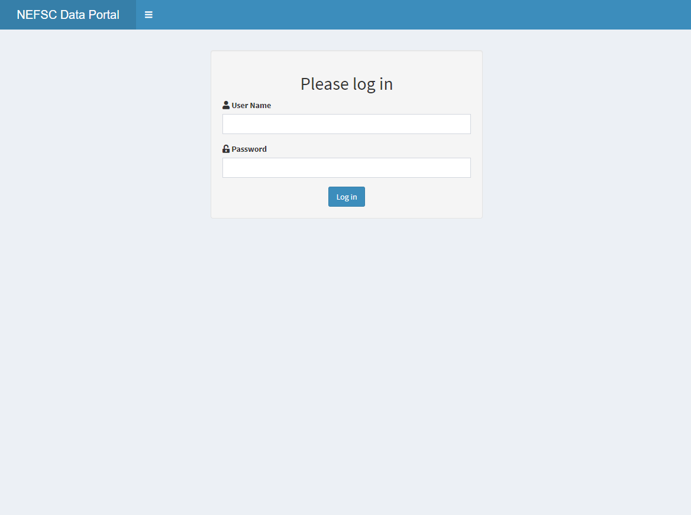

2 Authentication
App name: authenticate
Developer(s): Andy Beet
Point of contact: Andy Beet, andrew.beet@noaa.gov, (EDAB)
Keywords: credentials, authentication, password, database
Key Packages: DBI/odbc
GitHub: https://github.com/andybeet/authenticate
2.1 Application Purpose
A simple front end to authenticate a user. Authentication is based on database access credentials. If another app requires access to an internal database this front end can be included in the app to add a layer of authentication.

2.2 Uses
Not presently incorporated into any other app. However several other apps currently in development may benefit from its use.